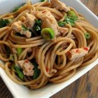

Thai rice noodles - rachael ray recipe
"Rachael Ray recipe - Discover how to cook the celebrity chef recipe. Delicious chef recipe explained by Rachael Ray. Healthy chef recipe. Easy, quick and recipe free!"

Preparation Time: 20 Min
Serves: 4
Difficulty: Easy
Cost:
Main Ingredients:
- 4 oz Dried rice noodles - medium size
- 1/4 c Vegetable oil
- 2 Garlic cloves; finely minced
- 3 tb Chopped raw shrimp
- 3 tb Lean ground pork
- 1 ts Sugar
- 1 tb Fish sauce
- 1 ts Soy sauce
- 2 ts Hot chili sauce
- 2 Beaten eggs
- 2 tb Tamarind sauce
- 1/4 c Bean sprouts
- 1 Scallion; sliced
- 1 tb Salty preserved radish
- 2 tb Coarsely ground peanuts (salted or unsalted)
- 2 tb Sliced green onions
- 2 Lemon wedges
- 1 Cucumber
Cooking Preparation of the Recipe:
- Soak noodles in hot water for 20 minutes, or until soft. Drain.
- Heat oil in a wok or large skillet and saute garlic until golden. Add the shrimp and ground pork and stir-fry until lightly browned.
Add the sugar, fish sauce, soy sauce, and chili sauce and stir-fry until the sugar dissolves. Pour in the beaten eggs, let them set slightly, then stir to scramble.
- Add the noodles and stir-fry about 2 minutes. Push noodles to side of wok or skillet. Add the tamarind sauce and cook for 1 minute.
Add the bean sprouts, scallions, radish, and stir-fry until bean sprouts are slightly cooked, about 1 minute. Stir noodles down into tamarind mixture and stir-fry until well-mixed.
- Pile noodles on a serving dish and sprinkle with peanuts and scallions. Seed cucumber and slice lengthwise into 4 pieces. Place lemon and cucumber wedges on side of plate.
Browse by categories
rice, pasta, ideas for dinner, best recipes, menu planning, celebrity chefs, ingredients, recipe free
This recipe if from Recipe Free recipe-free.com and the recipe is by Rachael Ray